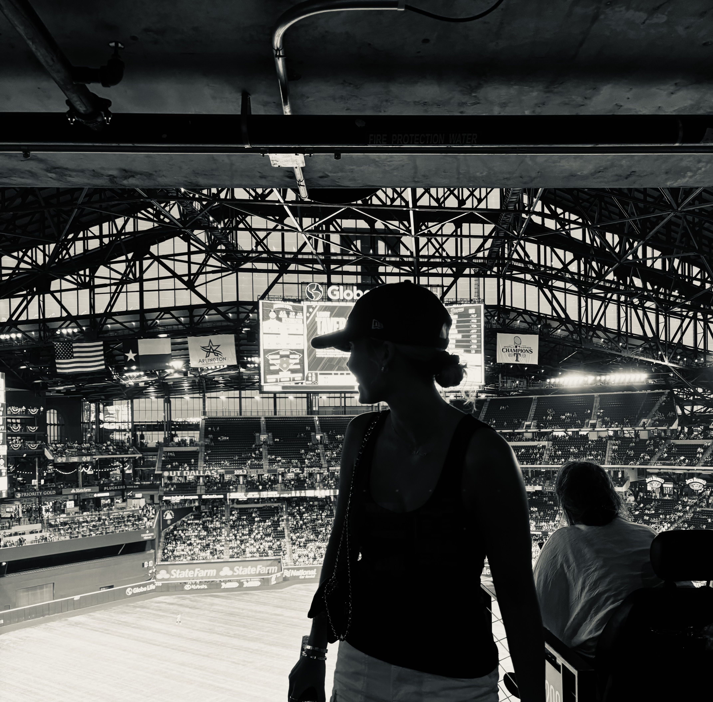
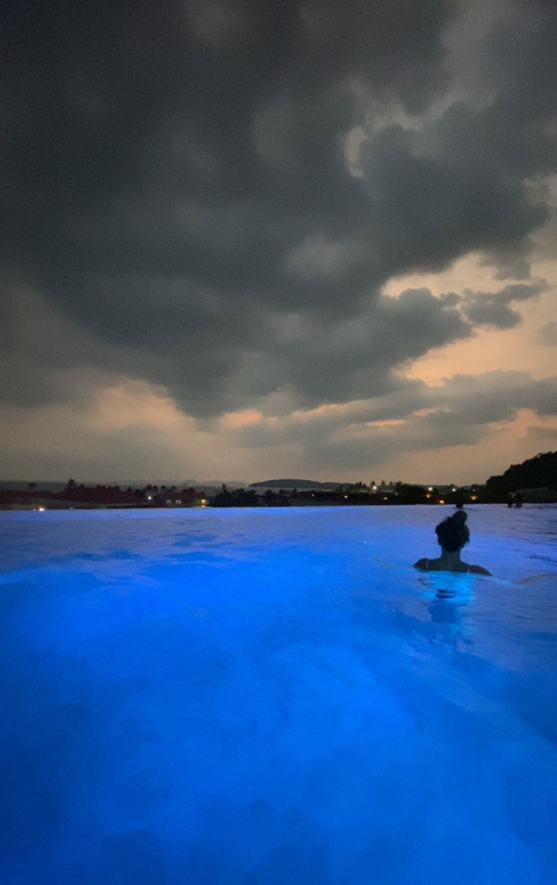
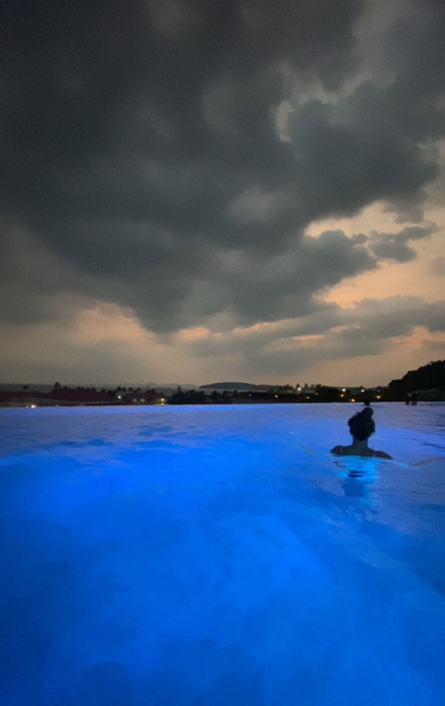

My resume
I started working part-time when I was 16 and have been working part-time ever since.
Before that I only had experience from childcare, animal care and school internship weeks.
I am really lucky that I have had a part-time job since I was 16. It has allowed me to
make money and, for example, travel. It has also worked well alongside high school and other studies.

 

My current experience
I work at Tapiolan Tennispuisto as a receptionist. I work there as a regular.
I have worked there for about 2 and a half years and I love the place. I sell café products, accept payments for tennis reservations,
book tennis reservations and take care of everything related to tennis and equipment.
I also do social media for our company. Since starting studies in Haaga-Helia, I have only done 1-2 shifts a week
but before that I did about 40 hours per week. Familiar players week after week make this work
enoyable and meaningful. Especially now that I dont see them so often,
it is heart warming to see them excited when they see me there. I am going to work there a lot more
during my summer vacation from school and then after that I will go back to only doing 1-2 shifts a week again.
My past experience
My first part-time job was Jungle Juice Bar. I worked in Redi, in Kalasatama.
I started the job in the beginning of 2021 when I was doing my first year in high school
I stopped working there in 2023. I got my current job in the beginning of 2023 so
I worked both jobs at the same time for a few months before I decided to only keep my current one.
Jungle Juice Bar was a customer service job. I made smoothies there.
I did about 10-15 hours per week there for those 2 years. It was a good first part-time job.
I also worked in Hirsala Golf for one summer in 2021. I was taking care of the golf courses.
As I mentioned, in addition I have done animal care and childcare when I was around 14-15 years old.
In middle school we also had those week-long internships. I worked as a school assistant
for a week at an elementary school and a week at a cafe.
Languages and skills
I speak Finnish as my native language. I also speak English fluently.
In addition I know the basics of Swedish, German and Spanish.
I like to challenge myself, so I enjoy practicing at work to speak different languages more fluently.
I hvae 5 years of experience in customer service. I can read situations
and work under pressure. I get along with all kinds of people and I also handle challenging situations well.
I can use many different cash register systems and I adapt quickly to new.